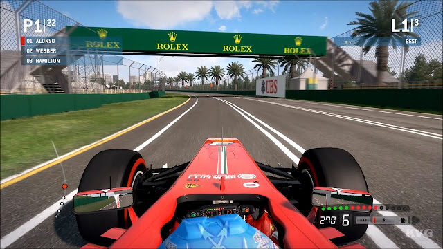

Página 1
F1 Formula 1 2010
Descripción del F1 Formula 1 2010 Título: F1 Formula 1 Plataforma: PC Fecha de lanzamiento: 2010 Distribuidor: Electronic Arts Desarrollador: Codemasters Formato: ISO Tamaño: 5.61 GB Idiomas: Español, Inglés, Otros Género: Conducción Servidores: Mega – Mediafire...
lo necesario para correr el juego Sistemas Operativos: Windows 10 / 8 / 7 / XP Procesador: Intel Core 2 Duo a 2.4 GHz o Athlon X2 Memoria: 2 GB de RAM Tarjeta Gráfica: GeForce 7800 / Radeon X1800 Disco Duro: 12.5 GB de espacio libre ...
Descargar JuegoGTA San Andreas
descripcion del juego: GTA San Andreas Plataforma: PC Distribuidor: Rockstar Games Desarrolador: Rockstar North Fecha de Lanzamiento: 2005 Formato: ISO Tamaño: 3.35 GB Idiomas: Español, Inglés, Otros Género: Acción Servidores: Mega – Mediafire...
lo necesario para correr el juego:Sistemas Operativos: Windows 10 / 8 / 7 / XP Procesador: 1 GHz Memoria: 256 MB de RAM Tarjeta Gráfica: 64 MB de VRAM Disco Duro: 3.35 GB de espacio libre...
Descargar JuegoOtras Secciones
Enter The Matrix
Sistema operativo: Windows XP / Vista / 7 / 8 / 10 Procesador: Pentium III 800 MHz Tarjeta de vídeo: 32 MB Memoria Ram: 128 MB Disco duro: 4 GB...
Título: Enter The Matrix Plataforma: PC Distribuidor: Atari Desarrolador: Shiny Entertainment Fecha de Lanzamiento: 2003 Formato: ISO Tamaño: 1.55 GB Idiomas: Español, Ingles, Italiano, Alemán y Portugués de brasil Género: Acción, Aventura Servidores: Mega – Mediafire...
Mediafare


F1 2013
Título: F1 2013 Plataforma: PC Fecha de lanzamiento: 2013 Distribuidor: Feral Interactive Desarrollador: Codemasters Formato: ISO Tamaño: 6.47 GB Idiomas: Español, Inglés, Otros Género: Conducción Servidores: Mega – Mediafire...
Sistemas Operativos: Windows 10 / 8 / 7 / XP Procesador: Intel Core 2 Duo a 2.4Ghz o AMD Athlon X2 5400+ Memoria: 2 GB de RAM Tarjeta Gráfica: AMD HD2600 o NVIDIA Geforce 8600 Disco Duro: 15 GB de espacio libre...
Enlace a Otro Ejemplo 